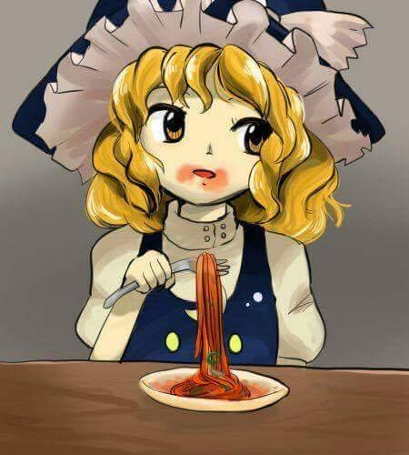
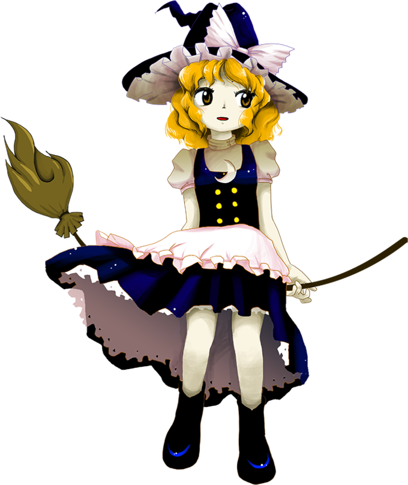
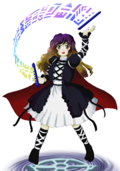
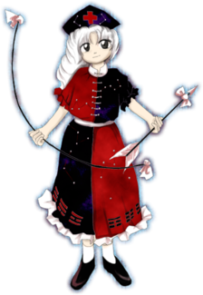

Characters
Updated as of Oct. 24, 2022
This is the characters webpage. Overall, Touhou has hosted over 180 characters. Here you can find the illustrations/media connected to this website.
WARNING! This only covers characters who appear in the main games (Touhou 1-18.5) Characters who only appear in the mangas or CD will not be included.
Touhou Popularity Poll 2022
| Name | Species | First Appearance | Ranking |
|---|---|---|---|
| Flandre Scarlet | Vampire | Touhou 6: Embodiment of the Scarlet Devil | 1st Place |
| Marisa Kirisame | Human | Touhou 3: Story of Eastern Wonderland | 2nd Place |
| Reimu Hakurei | Human | Touhou 1: Highly Responsive to Prayers | 3rd Place |
| Youmu Konpaku | Half-human and half-phantom | Touhou 7: Perfect Cherry Blossom | 4th Place |
| Sakuya Izayoi | Human | Touhou 6: Embodiment of the Scarlet Devil | 5th Place |
| Koishi Komeiji | Satori | Touhou 11: Subterranean Animism | 6th Place |
| Remila Scarlet | Vampire | Touhou 6: Embodiment of the Scarlet Devil | 7th Place |
| Fujiwara no Mokou | Immortal; formerly Human | Touhou 8: Imperishable Night | 8th Place |
| Satori Komeiji | Satori | Touhou 11: Subterranean Animism | 9th Place |
| Yuyuko Saigyouji | Ghost | Touhou 7: Perfect Cherry Blossom | 10th Place |
Sanae Kochiya (東風谷 早苗) Image is from Touhou 10: Mountain of Faith. Made by ZUN.
Saguya. Image made by Rr001C.
Marisa eating a delicious bowl of spaghetti. Image creator unknown for now.
Marisa Kirisame (霧雨魔理沙) Image is from Touhou 15: Legacy of the Lunatic Kingdom. Made by ZUN.
Byakuren Hijiri, a character from Touhou 12: Unidentified Flying Object. One of my personal favorite characters.
Eirin Yagokoro, a character from Touhou 8: Imperishable Night. She has one of the best themes in all of Touhou.